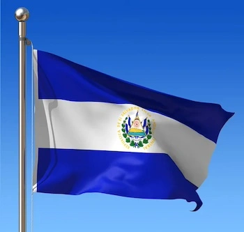

About Me
My name is Melissa Chirino, I'm from El Salvador but currently living in West Viriginia
I travel to United States 5 years ago. I love to spend time with my family and learn new things.
San Vicente, El Salvador
San Vicente is known for the variety of typical sweets made with coconut preserves, nance,
and
tamarindo.
One point of interest is the Tower of San Vicente.
